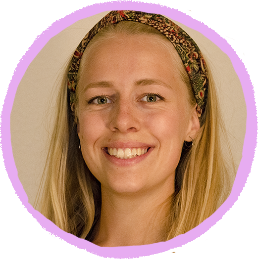

Hej! Jeg hedder Signe, jeg er 24 år og for tiden læser jeg multimediedesign. Det er rigtigt hyggeligt fordi jeg lærer at kode, designe, producere videomateriale og at bruge alle adobe-programmerne. Det er mega fedt at kunne lave ting selv, som fx det her portfolio. Jeg kan især godt lide at kreere ting der er lidt specielle og jeg prøver at udfordre mig selv lidt. Når jeg ikke laver ting på Kea så kan jeg godt lide at se film, danse, gå på genbrugsjagt, hygge og cykle rundt omkring.